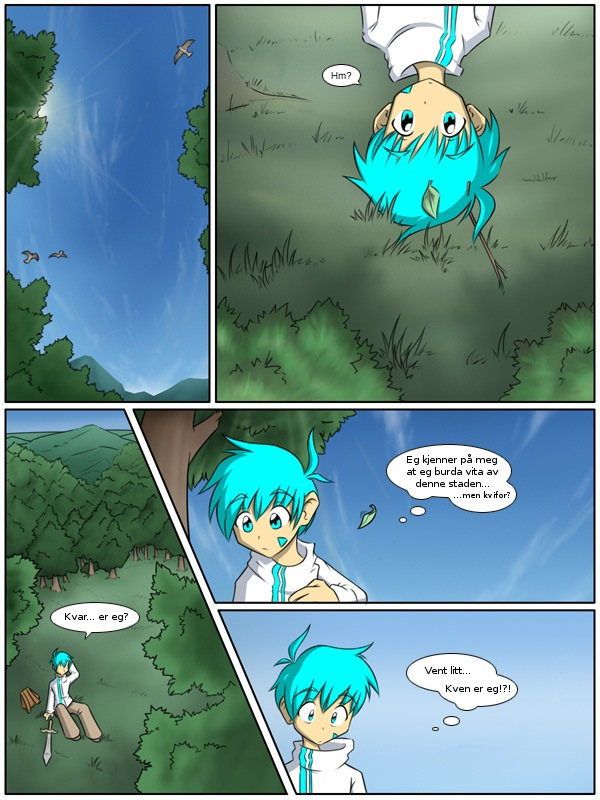

Side 1

Nytt:
Spegelside på 2kinds.tk
Fyrste versjon er oppe!
Twokinds-nynorsk
Eit prosjekt for å omsetja Twokinds til nynorsk
Twokinds er ein teikneserie av Thomas J. Fischbach, og er lisensiert under Creative Commons Attribution-NonCommercial-ShareAlike 3.0, som dette er ein lovleg bruk av.
Om du er utolmodig:
Opprinneleg engelsk verjons av Tom Fischbach.
Svensk versjon av Kindamoody.
Omsetjingsprosjektet er gjort tilgjengeleg her for å gjera det mogleg med eit samvirke om å gje Twokinds ein ny språkdrakt, og eventuelt gjera arbeidet for ein ny omsetjar lettare.
Kva som er på Github-sida: I greina "gh-pages" finn du den noverande nynorske versjonen av Twokinds. Dette er staden om du vil lesa teikneserien.
Om du vil endra på ei side, last heller ned .xfc filer frå prosjekfilene i "master" greina.
For spørsmål, send post til sigvabrend på Google si posttjeneste.